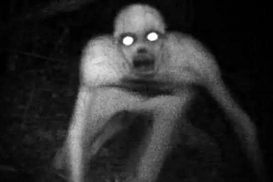

You decide to sit there a while longer it’s dark and you feel
uneasy about getting out. After about fifteen minutes or so you
start to get suspicious if someone was
even there so you decide
to check your mirror, then you see it, a hand grasping the corner
with long ghostly pale fingers, slender and almost spider like with
long
nails twisted and bent outstretched like claws scratching
into the metal. Two eyes glowing at you and a mouth agape revealing
rows upon rows of sharp ragged
teeth dripping with blood from
what must have been its last victim.

It starts climbing on the side of your trailer making its way toward
the cab with you inside, ripping and twisting the metal and it
moves closer and closer. You remember
you had packed a flare gun
incase of an emergency, it felt silly at the time I mean why would
you have ever needed something like that you thought to yourself,
but
in this moment it was all you could think of and what felt
like your only hope. You reach under your seat fumbling to find the
box while the air around you seems to be changing,
the
temperature starts to drop and you can feel yourself shaking from
the cold, your fingers feel numb making it harder to sift around
and the windows are starting to fog up.
Just as you manage to
grab the flare gun and turn yourself around the creature is at your
window, your hearts racing and you can feel your hair stand on end
as you shoot
it right in the mouth getting it caught between
its many rows of teeth and making it fall backwards flailing on
the road. You hurry up and take off driving as if there’s no
tomorrow
and you make it miles up the road to a diner where
you can wait until morning. You managed to survive this terrifying
encounter with a story to tell.